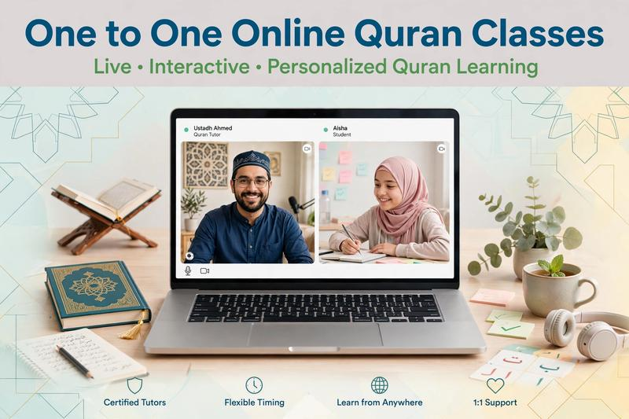

One-to-One Online Quran Classes

One-to-one online Quran classes give students private time with a Quran teacher instead of learning in a large group. This format allows the lesson to focus on one student's reading level, pronunciation, goals and pace.
For children and adults learning from home, private online Quran lessons can provide a structured way to study Quran reading, Tajweed, memorization and other Islamic subjects while choosing lesson times that fit their daily routine.
📖 Private Quran Learning
Start with a free trial to discuss your level, goals and preferred schedule before choosing regular one-to-one lessons.
Book a Free Trial →What Are One-to-One Online Quran Classes?
One-to-one online Quran classes are private lessons where one student learns directly with one teacher through an online platform. Unlike group classes, the teacher can give the student's recitation and questions their full attention during the lesson.
The lesson can be adapted according to the student's age, current Quran reading ability and learning objectives. A beginner may start with Arabic letters and Noorani Qaida, while a more experienced student may focus on Tajweed or Hifz.
Benefits of Private Online Quran Lessons
Personalized Learning Pace
Every student progresses differently. In a private lesson, the teacher can spend more time on a difficult sound, repeat an explanation or move forward when the student is ready.
Individual Recitation Correction
Quran reading requires careful pronunciation. One-to-one lessons allow the teacher to listen closely to the student's recitation and identify areas that need improvement.
Flexible Scheduling
Online learning removes the need to travel to a physical classroom. Families can choose available lesson times that work with school, work and other daily responsibilities.
Focused Attention
A private lesson gives the teacher more time to focus on one student rather than dividing attention between several learners.
What Can You Learn in One-to-One Quran Classes?
Private Quran lessons can be adapted to different learning goals. Depending on the student's needs, a program may include:
- Quran Reading: Learn Arabic letters, connected words and accurate Quran pronunciation.
- Noorani Qaida: Build foundational reading skills step by step.
- Tajweed: Study Quran pronunciation rules and practice applying them during recitation.
- Quran Memorization: Follow a structured Hifz plan with regular revision.
- Arabic Language: Develop basic or continuing Arabic skills alongside Quran study.
- Islamic Studies: Learn age-appropriate Islamic knowledge according to the student's needs.
One-to-One Quran Classes for Kids
Children can benefit from private lessons because the teacher can adjust the lesson to the child's age, attention span and current reading ability. Younger students may need shorter activities and frequent practice, while older children can work on Tajweed, memorization and longer Quran passages.
Parents can also choose a learning plan that fits the child's school schedule and family routine.
If you are specifically looking for children's Quran lessons, read our guide to Online Quran Classes for Kids .
One-to-One Quran Classes for Adults
Adults often have different learning goals and schedules from children. Some may be starting Quran reading from the beginning, while others may want to improve Tajweed, memorize selected Surahs or rebuild a regular Quran reading routine.
Private lessons allow the teacher to work at the student's pace without requiring the student to follow a group timetable.
You can also explore our guide to Online Quran Classes for Adults .
Are One-to-One Quran Classes Good for Beginners?
Private Quran lessons can be suitable for complete beginners because the teacher can start from the student's current level instead of assuming previous Quran reading experience.
A beginner's program may start with Arabic letters and basic vowel signs, followed by connected letters, words and short Quranic passages. Tajweed can then be introduced gradually as reading skills improve.
For a step-by-step introduction, see our Quran Classes for Beginners guide.
How Does an Online Quran Lesson Work?
- Choose a suitable lesson time.
- Connect with your Quran teacher online.
- Discuss your current level and learning goals.
- Read, practice and receive corrections during the lesson.
- Continue practicing between lessons according to the teacher's guidance.
The exact lesson structure can vary depending on the student's age, level and chosen subject.
How Often Should You Take Quran Lessons?
The ideal lesson frequency depends on the student's goals, available time and learning level. Some students prefer several lessons each week, while others choose a less frequent schedule and practice independently between lessons.
Consistency is generally more important than choosing a schedule that is difficult to maintain. A realistic routine can make it easier to continue learning over time.
How Much Do One-to-One Quran Classes Cost?
The cost of private online Quran lessons can depend on the number of lessons, lesson length and selected learning plan. At Al Shimaa Quran Academy, available plans start from $20/month.
Students and families can review the available plans before beginning regular lessons. A free trial is also available before committing to a regular schedule.
How to Choose a One-to-One Quran Teacher
When choosing a private Quran teacher, consider the student's goals, current reading level, preferred schedule and subjects they want to study.
- Choose a teacher who can work with the student's current level.
- Ask whether lessons are private and one-to-one.
- Check whether the available times fit your local time zone.
- Consider whether the student needs Quran reading, Tajweed, Hifz or Islamic Studies.
- Use a trial lesson to understand the teaching approach.
One-to-One Online Quran Classes for Sisters
Some women and girls prefer to study Quran with a female teacher. Private online lessons can provide a comfortable learning environment while allowing the student to focus on her individual Quran goals.
Read our guide to Female Quran Teacher Online for Sisters & Kids if you are looking specifically for female Quran teachers.
One-to-One Quran Classes for Students Worldwide
Online Quran education allows students to learn from home regardless of whether they live near a local Quran school. Families in the USA, UK, Canada, Australia and other countries can choose online lessons according to available schedules and time zones.
For students in Australia, see our dedicated guide: Online Quran Classes in Australia .
Related Quran Learning Guides
📖 Explore More Quran Learning Options
- Online Quran Classes for Kids
- Online Quran Classes for Adults
- Quran Classes for Beginners
- Female Quran Teacher Online
- Online Quran Classes in Australia
- Online Quran Class Pricing
Start One-to-One Quran Learning
If private Quran lessons fit your learning goals, you can start with a free trial at Al Shimaa Quran Academy. The trial provides an opportunity to discuss your current level, goals and preferred schedule before beginning regular one-to-one classes.
📖 Learn Quran Online One-to-One
Study Quran reading, Tajweed, Hifz and Islamic Studies with personalized online lessons.
Book Your Free Trial →